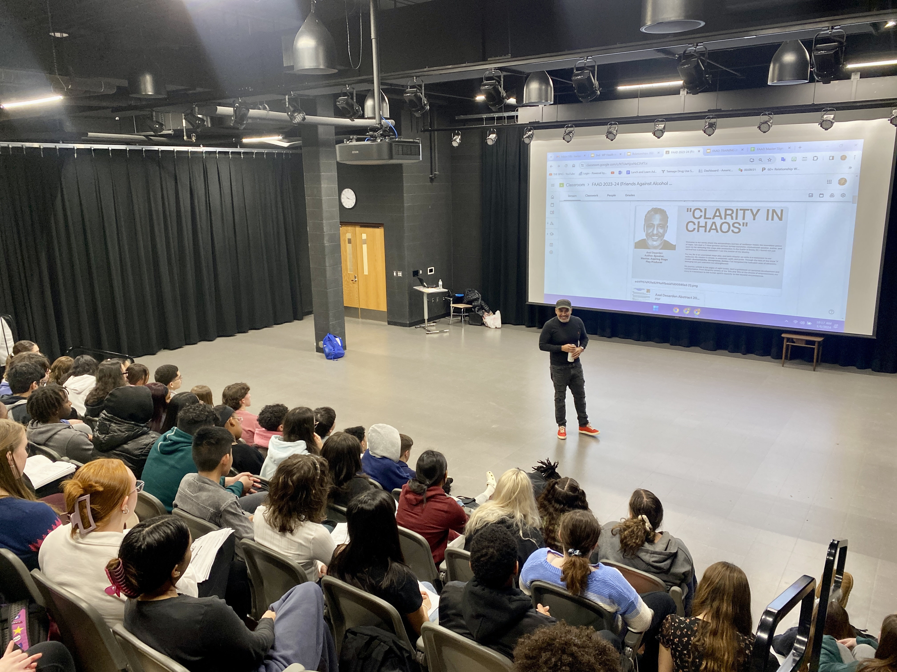
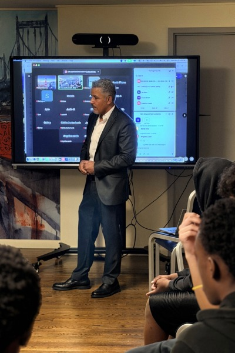
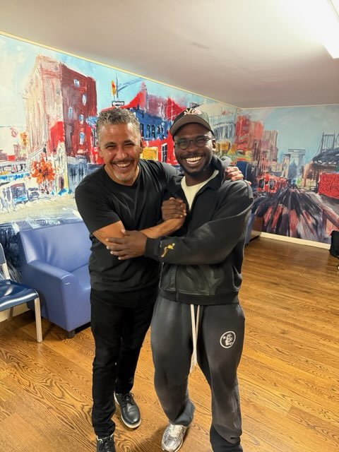
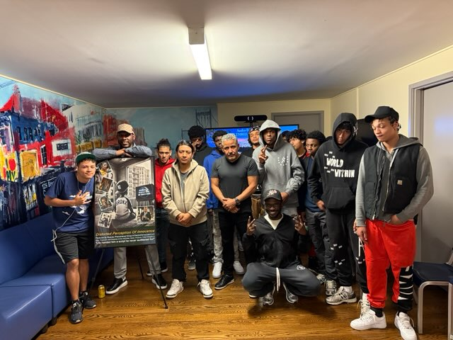

Principal Consultant | BlueJay Phenomenal Group, LLC
“Long before many people are confined by walls, they're often confined by the stories they've accepted as a truth.”
Facilitation & Lived Experience
“As a South Bronx native, I survived seven gunshot wounds at 15, across two incidents just two weeks apart. Later, an Alternative to Incarceration program helped redirect my path. Those experiences continue to shape my work as an author, filmmaker, facilitator, and lived-experience practitioner.”
Through Distorted Perception of Innocence and the Mirror Reflection & Response (MRR) methodology, I bring lived experience and narrative into facilitated reflection and dialogue—creating opportunities to examine identity, choices, accountability, and the possibility of change.
Designed to complement existing restorative justice practices, cognitive-behavioral programming, and institutional frameworks without replacing established facilitators.


Session content, facilitation, and learning objectives are tailored to the institutional setting, audience, and operational goals.
Tailored for youth and young adults involved in juvenile justice, secure-facility, diversion, and Alternative-to-Incarceration (ATI) programs seeking structured engagement around identity, trauma, and choices.
Serves restorative justice clinics, centers, facilitators, and community programs as an experiential resource that complements restorative circles, facilitated dialogue, and practitioner development.
Designed for law school restorative justice clinics, juvenile justice courses, and experiential learning settings to examine the human dimensions of justice, narrative, trauma adaptation, and lived experience in legal practice.
Engages attorneys, educators, youth-serving professionals, reentry practitioners, and facilitators examining high-responsivity engagement strategies and narrative-centered intervention models.
A structured 3-stage experiential framework connecting film, guided reflection, personal accountability, and practical action.
Cinematic Immersion
Screening of Distorted Perception of Innocence.
“I went from Bugs Bunny mornings, to gunshots, and broken home.”
Uses narrative and lived experience as an accessible entry point for engagement, recognition, questioning, and reflection.

Guided Reflection
Facilitated dialogue connecting film themes to perceptions, choices, and decision-making patterns.
Encourages examination of assumptions, survival-based adaptations, and thinking patterns that influence behavior, relationships, responses to conflict, and perceptions of accountability.

Accountability & Action
Facilitated reflection, practical response planning, and next-step goal setting.
Supports exploration of accountability, emotional regulation, conflict resolution, and alternative responses to challenging situations—moving from reflection toward considered choices and practical action.
Demonstrations and session previews illustrating the cinematic catalyst and agency activation process.
Flexible integration structured to support your program's curriculum, educational goals, and administrative requirements.
Explored as an experiential resource within secure facilities, ATI programs, restorative justice clinics, law school courses, community settings, and reentry environments.
Provides structured opportunities to reflect on identity, perception, choices, consequences, and accountability, tailored to group context and participant response.
Program materials, syllabus, engagement records, and Certificates of Completion can be discussed during institutional planning to support agreed goals.